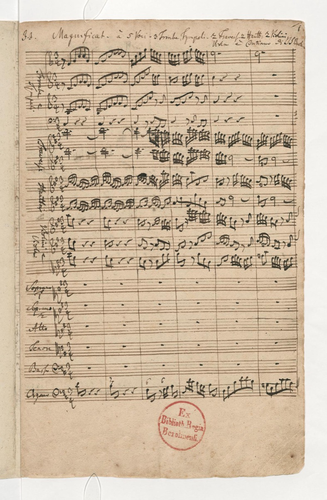

First Christmas: the Magnificat

For Vespers on his first Leipzig Christmas Day — 25 December 1723, barely half a year into the weekly grind of the new post — Bach produced the most jewel-cut of all his large works: the Magnificat. The text is Mary's canticle from the Gospel of Luke, and Bach set it in Latin, for Leipzig, Lutheran to its bones, kept Latin for its high feasts. The forces were the most festive the liturgy could hold: five-part choir, an orchestra crowned with trumpets and drums, a full roster of soloists. And the design is the marvel — twelve compact movements with not a wasted bar among them, massive architecture executed in miniature spans, a thirty-minute frame carrying the full weight of his grandest manner.
The version Leipzig heard that morning is not quite the one the world knows now. The autograph of 1723 stands in E-flat (BWV 243a), and it carries a local charm the later revision surrendered: four Christmas interpolations — little carols nested between the canticle's movements, in a Leipzig tradition for the day — tucked into the structure like ornaments hung on its branches. When Bach revised the work into its familiar D major about a decade later, he lifted the interpolations out, leaving the canticle to stand year-round on its own. Both versions survive, and together they make a tidy case study in a habit this timeline documents again and again: Bach treated his own finished works as living drafts, and revision was not repair but continued composition. The catalog card will eventually set the two side by side.
For the congregation, the piece announced precisely what the new cantor meant by festival music. The word-painting has an almost theatrical vividness: at omnes generationes — "all generations shall call me blessed" — the generations literally accumulate, fugal entries piling in relentlessly until the texture itself becomes a multitude; at dispersit superbos the proud are scattered in sound as well as in sense, flung across the voices of the choir; in Suscepit Israel an ancient chant melody floats serenely above the trebles, the old faith hovering over the new music. And running beneath it all is the five-voice choral richness Bach reserved for his very grandest statements — a scoring choice he would make again at this level in the B minor Mass, the work with which this one shares its festival blood.
That kinship is why the card matters beyond its date. The Magnificat is the study-sized door into Bach's large choral art: every technique of the Passions and the Mass is already present — the festival scoring, the pictorial choruses, the inward solo movements, the architectural control — but compressed into a span a listener can hold in the mind entire. Anyone preparing to climb the bigger monuments does well to walk through this smaller, perfect building first, and to notice how little of its effect depends on length. Concentration, not scale, is the real signature; the scale came later, when the occasions demanded it.
Biographically, the first Christmas fixes a rhythm the Leipzig years would keep. The cantata machine supplied the ordinary Sundays, week upon week without pause; but at the hinges of the year, Bach spent monumentality deliberately, mounting works of conspicuous splendor that told the city what its music director could do when the calendar opened a festival door. This was the first such hinge, and he answered it with trumpets and drums, five voices, and twelve movements without a wasted bar. Leipzig had hired, among other things, a schoolmaster and a civic official; on Christmas Day it heard what else had moved into the Thomasschule, and the pattern — weekly production punctuated by deliberate monuments — would hold for the rest of his life there.
Continue with the era essay: Leipzig I: the cantata machine, or follow the five-voice thread onward: the B minor Mass.
Autograph of the E-flat Magnificat, BWV 243a (Bach Digital)
Wolff, The Learned Musician, ch. 8
→ full bibliography & links